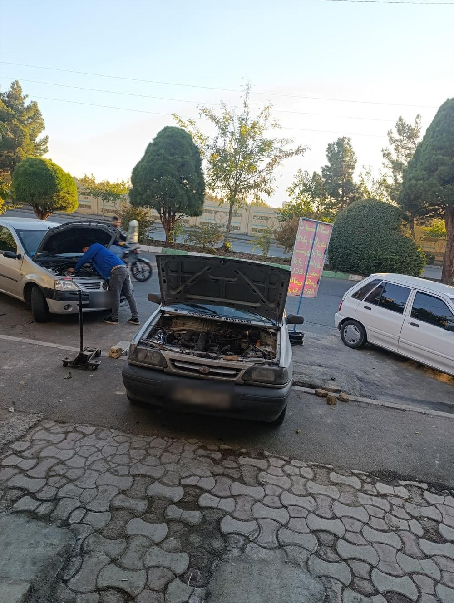
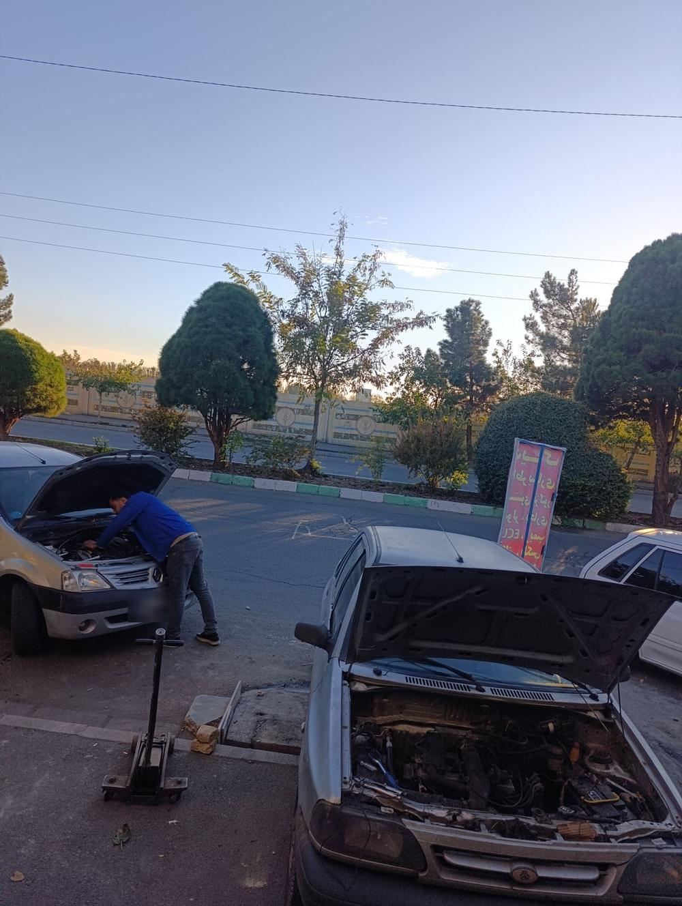

کرج، بلوار امامزاده طاهر
مرکز تخصصی برق اتومبیل مدرن برق خودرو و دیاگ در کرج
دیاگ، دینام و استارت، باتریسازی، برق و انژکتور، کولر، بخاری، ECU، ریمپ و روشن کردن خودروی خاموش.
۶ صبح تا ۱۰ شب۲۰۰ متر بعد از پمپ بنزین امامزاده

دیاگ، دینام و استارت، باتریسازی، برق و انژکتور، کولر، بخاری، ECU، ریمپ و روشن کردن خودروی خاموش.
مشکل خودروتان را پیدا کنید و ببینید کدام خدمت مناسب است
اگر استارت نمیزند یا خودرو خاموش مانده، تماس بگیرید.
روشن کردن خودروی خاموش · باتریسازی · دینام و استارتاستارت سنگین یا چراغهای کمنور؟ باتری و شارژ را بررسی میکنیم.
باتریسازی · دینام و استارتبا دستگاه دیاگ، خطاهای ثبتشده را میخوانیم و عیب را پیدا میکنیم.
دیاگ خودرو · برق و انژکتور · ECUسیستم کولر خودرو را بررسی میکنیم.
کولر خودروبخاری را بررسی و عیب را مشخص میکنیم.
بخاری خودروبررسی ECU و تنظیم نرمافزار آن. برای جزئیات و نوع خودرو تماس بگیرید.
ECU · ریمپدیاگ خودرو، باتریسازی، ECU و ریمپ، روشن کردن خودروی خاموش
عیبیابی برقی و الکترونیکی با دستگاه دیاگ
بررسی و تعمیر دینام و استارت
بررسی، شارژ و تعویض باتری
تعمیرات برق موتور و سیستم انژکتور
بررسی سیستم کولر
بررسی و تعمیر بخاری
بررسی و تعمیر مغز الکترونیکی خودرو
تنظیم نرمافزار ECU
کمک برای روشن شدن خودروی خاموش
ساده و بدون پیچیدگی
با مهران یا مهدی تماس بگیرید یا در واتساپ پیام بدهید و مشکل خودرو را بگویید.
خودرو بررسی میشود و عیب مشخص میشود.
بعد از مشخص شدن عیب، تعمیر انجام میشود.
فقط چیزهایی که میتوانید خودتان ببینید
تصاویر این صفحه از خود مرکز است.
بلوار امامزاده طاهر، کرج، با نقشه و مسیریابی.
شبانهروزی نیستیم؛ قبل از آمدن تماس بگیرید.
مستقیم با مالکان صحبت کنید.
کرج، بلوار امامزاده طاهر، ۲۰۰ متر بعد از پمپ بنزین امامزاده
مسیریابی با گوگل مپ، نشان یا بلد
عکسهای واقعی از محل کار. پلاک خودروها محو شده است.




برق خودرو، دیاگ و باتریسازی در کرج
نه. ساعت کار مرکز ۶ صبح تا ۱۰ شب است. برای اطمینان از حضور، قبل از آمدن تماس بگیرید.
کرج، بلوار امامزاده طاهر، ۲۰۰ متر بعد از پمپ بنزین امامزاده. با دکمه «مسیریابی» مسیر را ببینید.
بله، عیبیابی برقی و الکترونیکی با دستگاه دیاگ از خدمات مرکز است.
بله، بررسی، شارژ و تعویض باتری و همچنین بررسی دینام و استارت انجام میشود.
روشن کردن خودروی خاموش جزو خدمات است. ابتدا تماس بگیرید و وضعیت خودرو را بگویید.
بله. برای نوع خودرو و جزئیات کار، قبل از آمدن تماس بگیرید.
هزینه به نوع خودرو و عیب بستگی دارد و بعد از بررسی مشخص میشود.